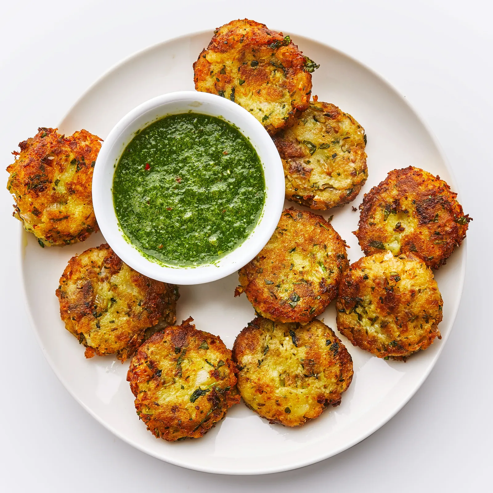

Aloo Tikki

*Image and recipe is from Bon Appetit
Aloo Tikkis have been a staple in my house. Coming from Sindhi family we love potatoes
and the aloo tikki serves as the perfect way to consume them. A spicy potato patty is fried
to perfection and can be accompanied with a sauce or be the accompanyment to any dish to bring
the eating experience to a whole new level.
- 1 lb. red potatoes
- 2 green thai chilli
- 1 garlic clove
- 1 tsp. salt
- 1/2 red onion
- 1/2 tsp. cayenne pepper
- 1/2 tsp. cumin seeds
- 1/4 tsp. ground turmeric
- 2 tbsp. rice flour
-
Cut potatoes in half and place in large pot of water.
Bring to boil over high heat and allow potatoes to boil
until a knife easily pierces all the way through (15-30 minutes).
Drain once done.
-
Coarsely chop onions, chilli, and garlic clove.
-
Once potatoes are cool enough to handle mash them, and
combine all ingredients in one bowl and mix throughly.
-
Form mixture into 2-3 inch patties, and shallow fry
in an oil of your choice until golden brown. Then let rest
on a paper-towel lined wire rack.